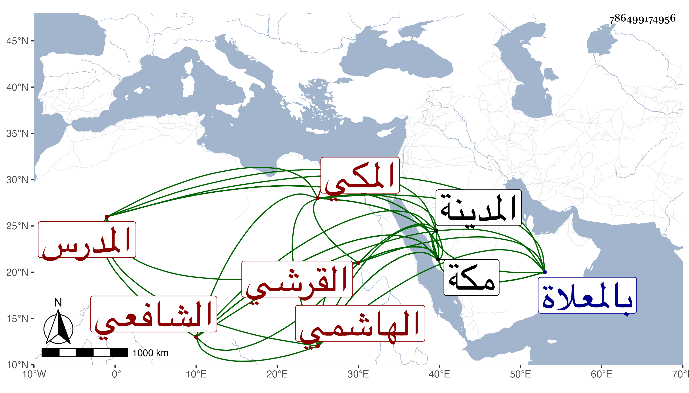

0902Sakhawi.DawLamic.ITO20230111-ara1.EIS1600.786499174956
Biography ID: 786499174956
584
محمد بن علي بن هاشم بن علي بن مسعود بن أبي سعد بن غزوان بن حسن الجمال أبو سعد بن الإمام الأوحد المدرس نور الدين القرشي الهاشمي المكي الشافعي سبط زينب ابنة القاضي أبي الفضل النويري التي أمها أم الحسين ابنة القاضي شهاب الدين الطبري وأمه أم كلثوم سعيدة ابنة المحب الطبري . هكذا رأيت نسبه بخط أبيه ، وهو بكنيته أشهر . ولد في ليلة الاثنين ثالث ذي الحجة سنة خمس عشرة بمكة ونشأ بها فتفقه بالجمال الكازروني وأذن له بالإفتاء والتدريس وصحب عبد الكبير الحضرمي ولازمه واختص به وكذا اختص بالشرف أبي الفتح المراغي وسمع عليه بل سمع على ابن الجزري وابن سلامة وغيرهما وبالمدينة النبوية في سنة سبع وأربعين على المحب المطري سنن الدارقطني في آخرين ، وأجاز له ابن طولوبغا وغيره وكان فاضلا خيرا دينا بهيا عفيفا شريف النفس حسن الخط منجمعا عن الناس لا يخالط إلا القليل ممن يثق به ، ولم يتزوج ولا تسري مع مزيد العفة من صغره إلى أن مات ، ومحاسنه جمة والناس كالمتفقين عليه باشر أوقاف جدته بعفة ونزاهة وثمرها بعد عمارتها وقد لقيته بمكة في سنة ست وخمسين فسمع بقراءتي ووصفني بسيدنا الشيخ الإمام العالم المحدث البارع بل أجاز ببعض الاستدعاآت . مات في ظهر يوم الخميس سابع عشر صفر سنة تسع وخمسين بمكة وصلي عليه بعد صلاة العصر بالساباط المتصل بمقام الشافعي ودفن بالمعلاة في تربة بنى النويري بقبر أمه رحمه الله ونفعنا به .
